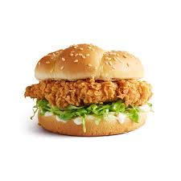

Zinger Burger

Description
The Zinger Burger is a crispy, spicy fried chicken sandwich inspired by fast-food favorites. It features a juicy chicken fillet marinated in flavorful spices, double coated in seasoned flour, deep-fried until golden, and served in a soft bun with creamy mayo and crisp lettuce.
Perfect for lunch or dinner, this burger delivers a satisfying crunch with every bite and is surprisingly easy to recreate at home.
Main Ingredients
- Boneless chicken breast (flattened fillets)
- Burger buns
- Mayonnaise
- Lettuce leaves (shredded or whole)
- Oil (for deep frying)
For the Marinade
- Buttermilk (or mix milk with 1 tbsp vinegar)
- Red chili powder
- Black pepper
- Paprika
- Salt
- Garlic powder
- Onion powder
- Soy sauce or hot sauce (optional)
For the Coating
- All-purpose flour
- Cornstarch
- Salt
- Black pepper
- Chili powder
- Cold water (for double-dip technique)
Optional Additions
- Cheese slices
- Pickles
- Hot sauce or sriracha mayo
- Tomato slices
- Coleslaw (as a topping)
Steps to Make Zinger Burger
- In a bowl, combine marinade ingredients and mix well. Add chicken fillets, cover, and refrigerate for at least 2 hours (overnight is best).
- In another bowl, mix all coating ingredients (flour, cornstarch, spices).
- Heat oil in a deep fryer or pan over medium-high heat.
- Remove chicken from marinade. Dip in flour mixture, then quickly dip in cold water, and again coat in flour. Press to create a flaky texture.
- Deep fry the coated chicken until golden and crispy (about 5–7 minutes per fillet). Drain on paper towels.
- Toast burger buns lightly with butter or mayo.
- Assemble the burger: spread mayo on buns, add lettuce, place crispy chicken fillet, and add cheese, pickles, or other desired toppings.
- Cover with top bun, secure with a skewer or wrap in paper, and serve hot with fries or a drink.
go back to index page